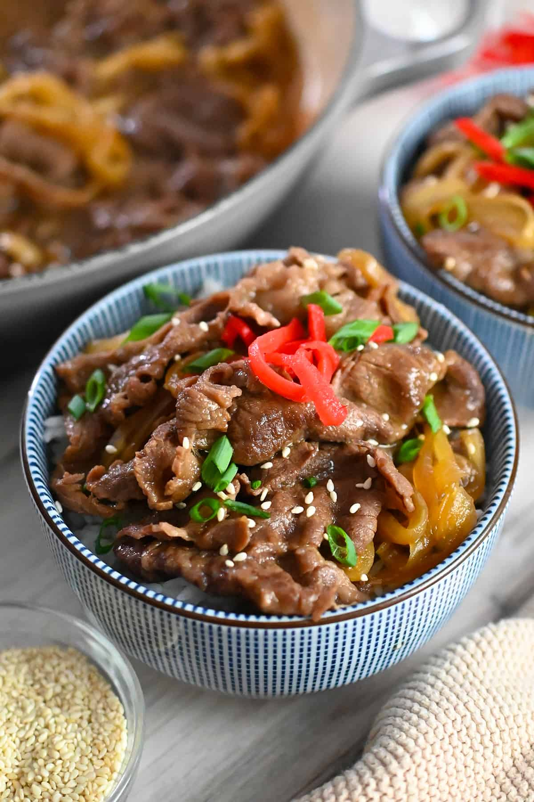

Gyudon

Description
Gyudon, otherwise known as the Japanese beef bowl, is a popular, easy-to-make comfort food, containing thinly sliced
beef and tender onions in a savory sauce, all over a warm bowl of rice.
Various additions such as eggs and pickled
ginger could be added to this nutritious food for more flavor, allowing for many different eating experiences.
Ingredients
- 1/2 sliced onion
- 1 scallion
- 1/2 lb thinly sliced beef
- 1/2 cup dashi
- 2 tbsp sake
- 2 tbsp mirin
- 3 tbsp soy sauce
- 1 tbsp sugar
- Rice
Steps
- Cook rice. Serve when ready.
- Cut the sliced beef into smaller 3 in. pieces.
- Using a large pan, put in the dashi, sake, mirin, soy sauce, and sugar. Mix to combine.
- Add in the onion, making sure to separate the layers.
- Add in the meat.
- Cover the pan and let the ingredients cook over medium heat. As the meat browns, skim off the scum that forms.
- Turn the heat down to low once the meat is thoroughly brown and simmer for 3-4 minutes.
- Add scallion once finished cooking.
- Serve a bowl of rice and add the cooked meat on top.